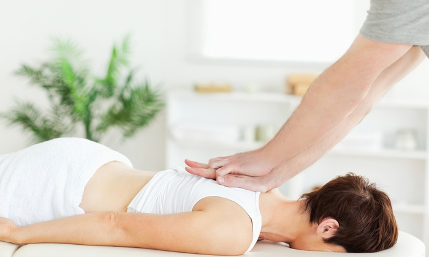
L'Osteopatia è un sistema consolidato di assistenza alla salute che si basa sul contatto manuale per la valutazione, la diagnosi ed il trattamento di diverse patologie.
Si tratta di una forma di assistenza incentrata sulla salute della persona piuttosto che sulla malattia. Si avvale di un approccio causale e non sintomatico (spesso infatti la causa del dolore trova la sua locazione lontano dalla zona dolorosa), ricercando le alterazioni funzionali del corpo che portano al manifestarsi di segni e sintomi che possono poi sfociare in dolori di vario genere.
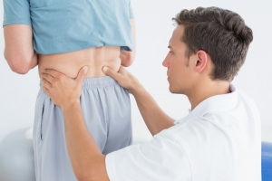
L’innovazione consiste in alcuni principi cardine di cui ancora l’osteopatia si avvale:
- L'essere umano è un'unità dinamica di funzioni il cui stato di salute è determinato da corpo mente e spirito
- Il corpo possiede dei meccanismi di autoregolazione e autoguarigione
- La struttura e la funzione sono reciprocamente inter-correlate
La terapia Osteopatica si fonda sull'applicazione di tutti e tre i principi.
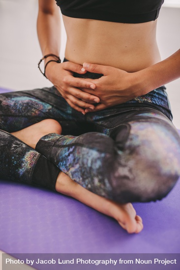
OSTEOPATIA PER CURARE MAL DI STOMACO, GASTRITE, REFLUSSO, ERNIA IATALE
L'Osteopatia è un sistema consolidato di assistenza alla salute che si basa sul contatto manuale per la valutazione, la diagnosi ed il trattamento di diverse patologie.
Si tratta di una forma di assistenza incentrata sulla salute della persona piuttosto che sulla malattia. Si avvale di un approccio causale e non sintomatico (spesso infatti la causa del dolore trova la sua locazione lontano dalla zona dolorosa), ricercando le alterazioni funzionali del corpo che portano al manifestarsi di segni e sintomi che possono poi sfociare in dolori di vario genere.
L’innovazione consiste in alcuni principi cardine di cui ancora l’osteopatia si avvale:
- L'essere umano è un'unità dinamica di funzioni il cui stato di salute è determinato da corpo mente e spirito
- Il corpo possiede dei meccanismi di autoregolazione e autoguarigione
- La struttura e la funzione sono reciprocamente inter-correlate
La terapia Osteopatica si fonda sull'applicazione di tutti e tre i principi.
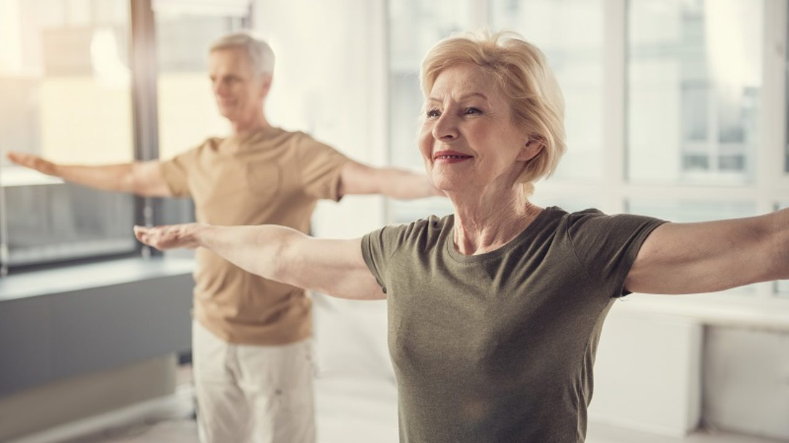
La posturologia clinica è la scienza medica che studia il funzionamento del Sistema Posturale ed analizza la relazione tra lo squilibrio del Sistema Posturale e le patologie dell’apparato locomotore. Questo significa curare tutte le patologie conseguenti ai compensi che il nostro organismo mette in atto in seguito agli squilibri del Sistema Posturale: contratture muscolari, mal di schiena, cefalea, problemi articolari, artrosi, scoliosi, ernie del disco ed altro.
L’approccio posturologico è importante perché, fin dalla nascita, il nostro cervello memorizza gli errori del Sistema Posturale come riferimenti di normalità, per cui non possono correggersi da soli.
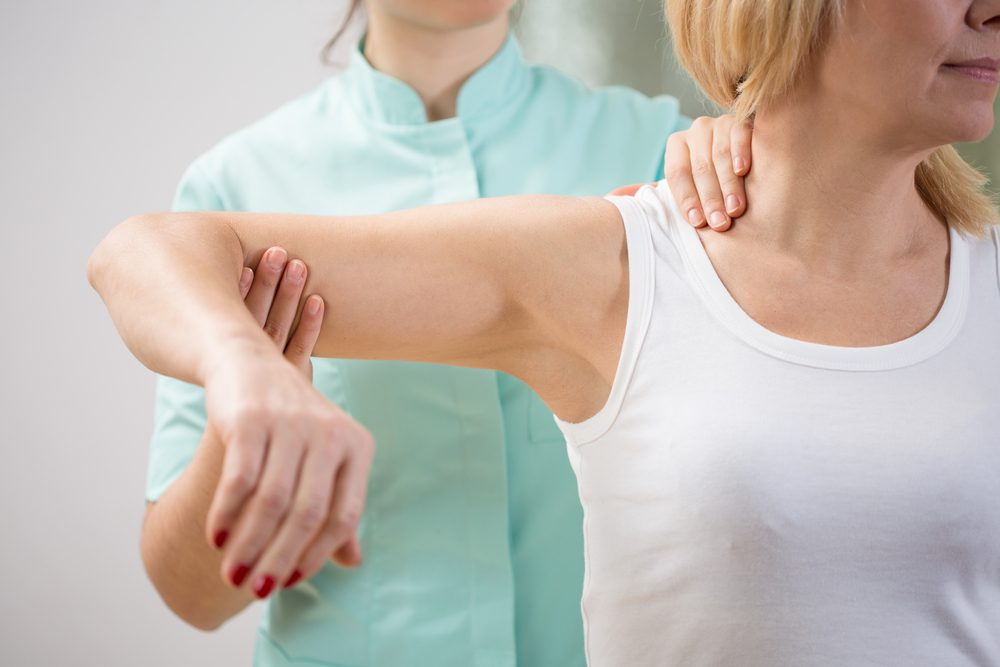
La possibilità di modificarli è uno strumento cruciale sia per prevenzione che per la terapia.
La valutazione posturale analizza e studia il sistema tonico posturale del corpo umano, quest’ultimo ha come obiettivo il mantenimento in una costante posizione di equilibrio del centro di gravità corporeo, sia in condizioni statiche che dinamiche attraverso una grande quantità di informazioni, provenienti da recettori sensoriali, quali: il sistema oculomotore, il sistema vestibolare, il distretto cranio-cervico-mandibolare, il piede, il sistema muscolo-scheletrico, la pelle (eventuali cicatrici annesse), e da fattori psicosomatici.
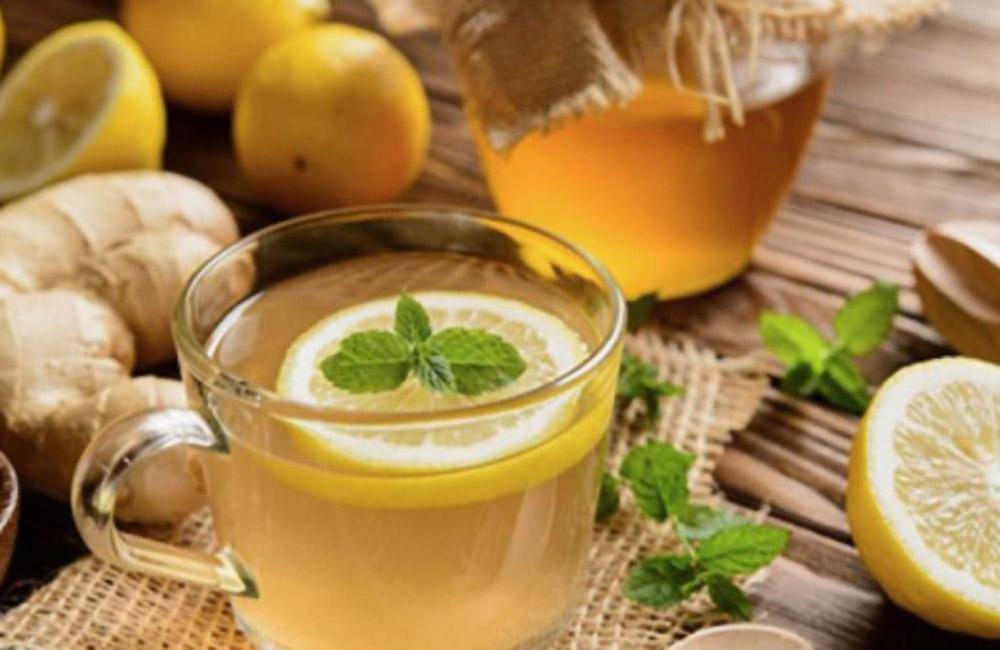
CONSULENZA su alimentazione e fitoterapia:
Il primo incontro ha lo scopo di determinare la costituzione personale, il suo eventuale squilibrio, il suo stile di vita, le tendenze alimentari, quello che la persona vive come squilibrio interno e ciò che desidera ottenere.
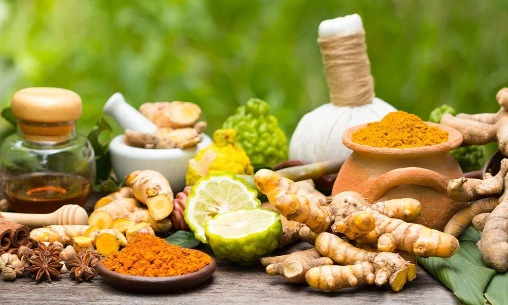
Attraverso un sistema di valutazione degli aspetti fisiologici e costituzionali, con la Consulenza Ayurvedica si guida la persona verso una routine quotidiana più consona alla propria costituzione:
- vengono fornite indicazioni alimentari corrette a ristabilire gli aspetti costituzionali in squilibrio
- vengono forniti consigli fitoterapici utili alla condizione attuale
- vengono indicate le forme di massaggio ayurvedico più appropriate per ristabilire quanto osservato precedentemente.
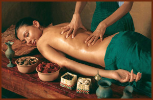
Massaggio Ayurvedico (Rilassante):
Oleazione di tutto il corpo con olio caldo. Trattamento profondamente depurativo e “ringiovanente”, migliora la circolazione sanguigna e fortifica i tessuti, aiuta nei casi di costipazione, migliora il sonno, elimina la stanchezza sia fisica che mentale.
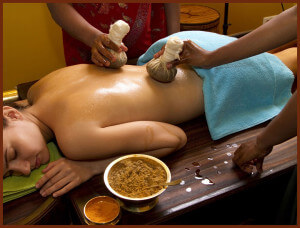
Pindasweda:
Tamponamento del corpo con sacchetti di erbe per eliminare tossine, altamente piacevole e rilassante. Il corpo viene prima massaggiato e successivamente tamponato con sacchetti erbali immersi in olio caldo.
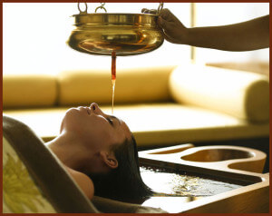
Shiro dhara (Caduta di olio sulla fronte):
Massaggio rilassante con caduta di olio tiepido sulla fronte, migliora i sintomi legati a stress, ansia, insonnia, angoscia, attacchi di panico e altri disturbi legati al sistema nervoso.
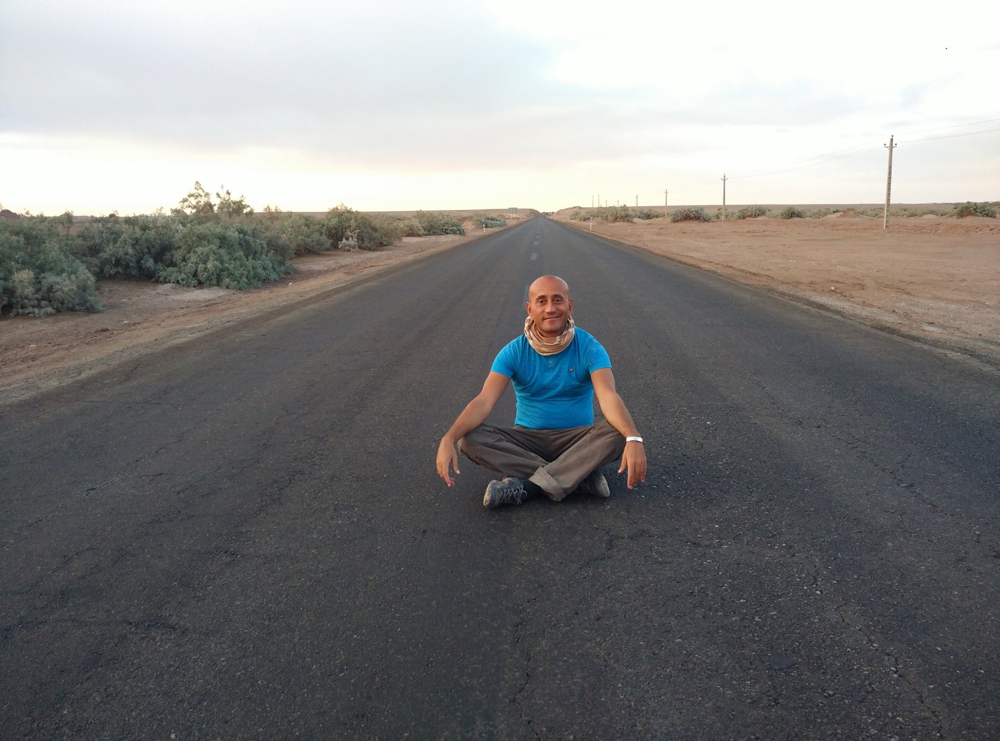
Dott. Luca Luongo
Laureato in Scienze Sociali
Ho studiato la medicina naturale Ayurveda tra l’India e l’Italia. La ricerca e lo studio per apprendere, come intervenire con un appoccio naturale sulle patologie che affliggono il nostro essere, è un percorso affascinante e lungo che non trova mai conclusione.
I massaggi ed trattamenti ayurvedci sono di natura calda ed avvolgente per il corpo, la mente e lo spirito, aiutandoci cosi a farci vivere la nostra vita con gioia, qualità e pienezza
Ho completato la mia formazione diplomandomi all’accademia di Posturologia ed Ostepatia, diventando uno specialista della Terapia Osteopatica-Posturale AITOP.
Per questo motivo mi reco in India per effettuare sempre nuove ricerche e nuovi approfondimenti sui trattamenti, sugli oli, sulla fitoterapia e sull’alimentazione, che mi permettono di approfondire sempre di più l’efficacia curativa dei trattamenti che pratico. Collaboro con medici Ayurvedici.
Lo Studio di Medicina Naturale si trova in via Nilo 15, 80134 Napoli. Indicazioni stradali: Utilizzando i mezzi pubblici: